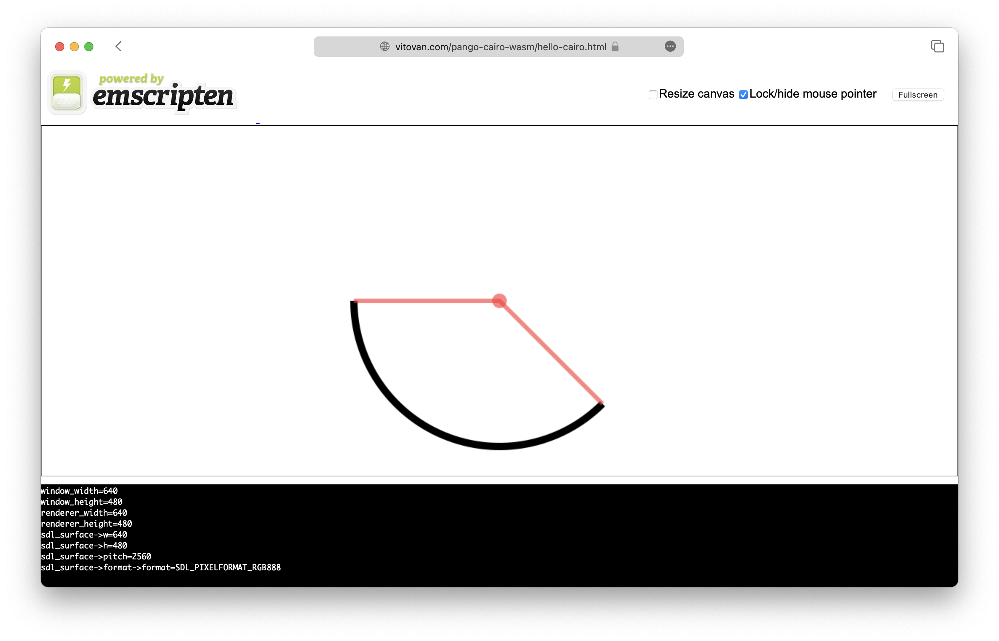

PangoCairo on the Web
Compile Cairo/Pango/PangoCairo based applications from C to WebAssembly?src
Try it online (1.5 ~ 3.5 MB data transfer):
Cairo: https://vitovan.com/pango-cairo-wasm/hello-cairo.html
PangoCairo: The pthreads used by Pango requires Web Workers require extra HTTP HEADERS, and the workarounds would break other pages on my website. So, please download the files and serve them locally.
Preview:


Usage
Setup emcc & pkg-config
with Docker
xxxxxxxxxxalias emcc="docker run --rm --name pcwa -v $(pwd):/app -w=/app vitovan/pango-cairo-wasm emcc"alias pkg-config="docker run --rm --name pcwa -v $(pwd):/app -w=/app vitovan/pango-cairo-wasm pkg-config"# give it a tryemcc --helppkg-config --libs --cflags pangocairofrom Source
This build.sh only compiles on Fedora, if you can't get one, please modify it before execution.
xxxxxxxxxxgit clone https://github.com/VitoVan/pango-cairo-wasm.gitcd pango-cairo-wasmgit submodule initgit submodule updateecho -e "export magicdir=${HOME}/pango-cairo-wasm-magic\n$(cat env.sh)" > env.shbash build.shWait for 20 minutes or more. If all went well, execute:
xxxxxxxxxx. env.sh# give it a tryemcc --helppkg-config --libs --cflags pangocairoCompile C Code
Cairo with no pthread
xxxxxxxxxxexport CAIRO_FLAGS="$(pkg-config --libs --cflags glib-2.0, gobject-2.0, cairo, pixman-1, freetype2, fontconfig, cairo, expat, harfbuzz) -s USE_SDL=2 -s USE_PTHREADS=0 -s ASYNCIFY"
curl -LO https://raw.githubusercontent.com/VitoVan/pango-cairo-wasm/main/hello-cairo.cemcc $CAIRO_FLAGS hello-cairo.c -o hello-cairo.htmlPangoCairo with pthread
xxxxxxxxxxexport PANGOCAIRO_FLAGS="$(pkg-config --libs --cflags glib-2.0, gobject-2.0, cairo, pixman-1, freetype2, fontconfig, cairo, expat, harfbuzz, pangocairo) -s USE_SDL=2 -s EMULATE_FUNCTION_POINTER_CASTS -s PTHREAD_POOL_SIZE=10 -s USE_PTHREADS=1 -s ASYNCIFY"curl -LO https://raw.githubusercontent.com/VitoVan/pango-cairo-wasm/main/hello-pangocairo.c# get yourself the fontsmkdir ./fontscd fontscurl -LO https://raw.githubusercontent.com/VitoVan/pango-cairo-wasm/main/fonts/OpenSans-VariableFont_wdth,wght.ttfcurl -LO https://raw.githubusercontent.com/VitoVan/pango-cairo-wasm/main/fonts/OpenSans-Italic-VariableFont_wdth,wght.ttfcd ..# compileemcc $PANGOCAIRO_FLAGS --embed-file ./fonts@/usr/share/fonts/ hello-pangocairo.c -o hello-pangocairo.htmlStart the debug server
xxxxxxxxxxcurl -LO https://raw.githubusercontent.com/VitoVan/pango-cairo-wasm/main/wasm-serverchmod +x wasm-server./wasm-serveropen the following links in your browser: